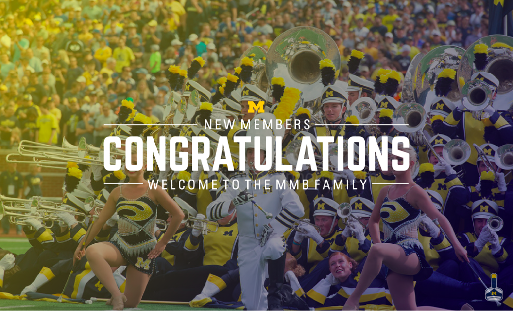
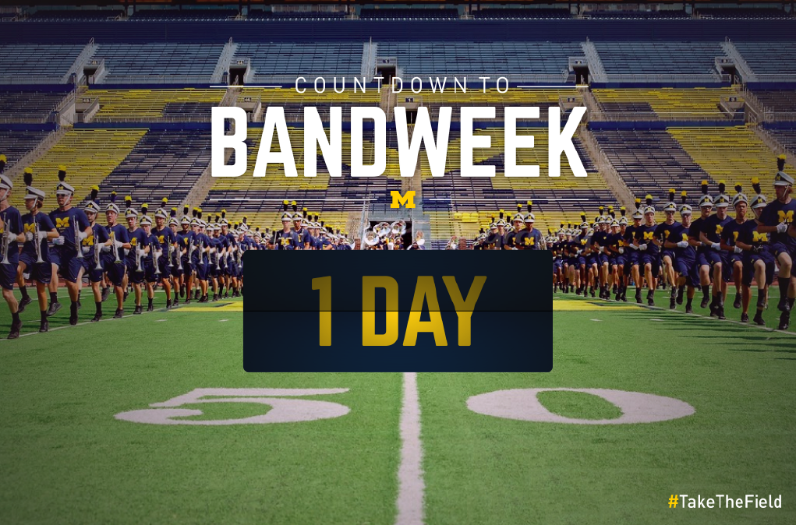
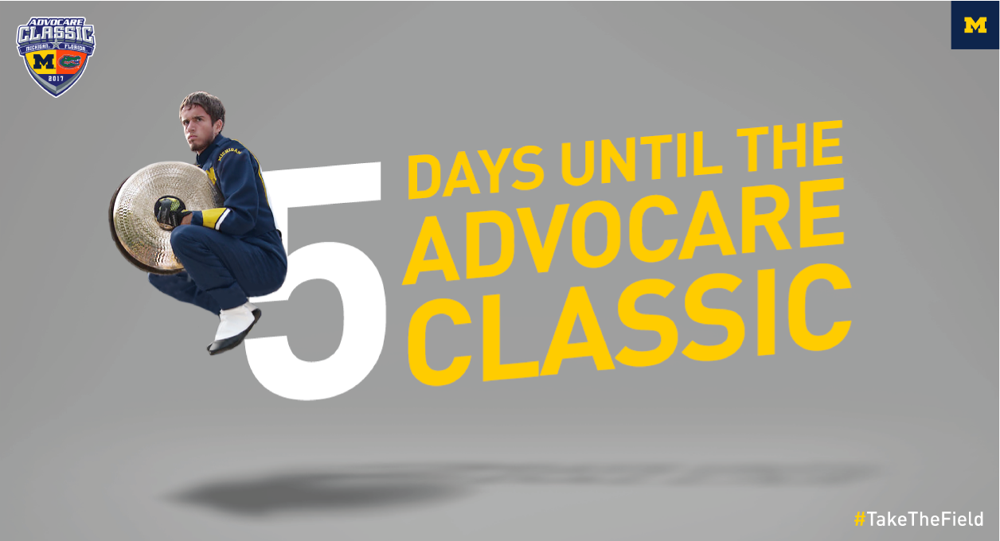
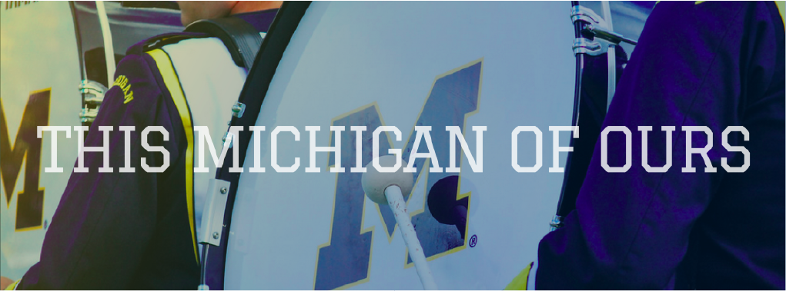
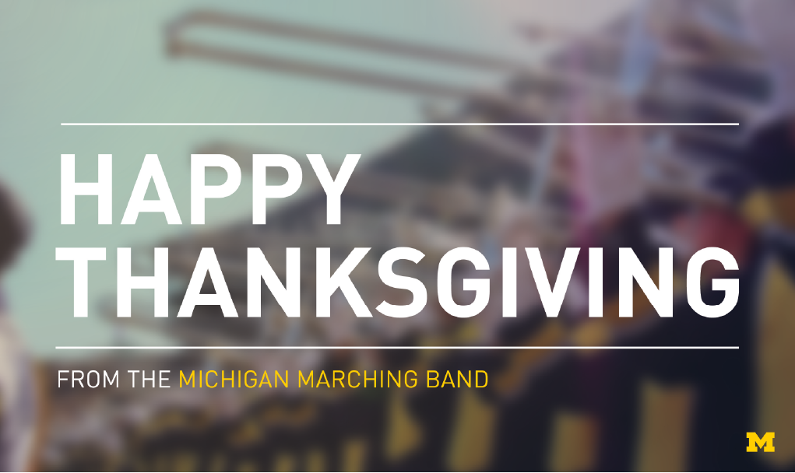
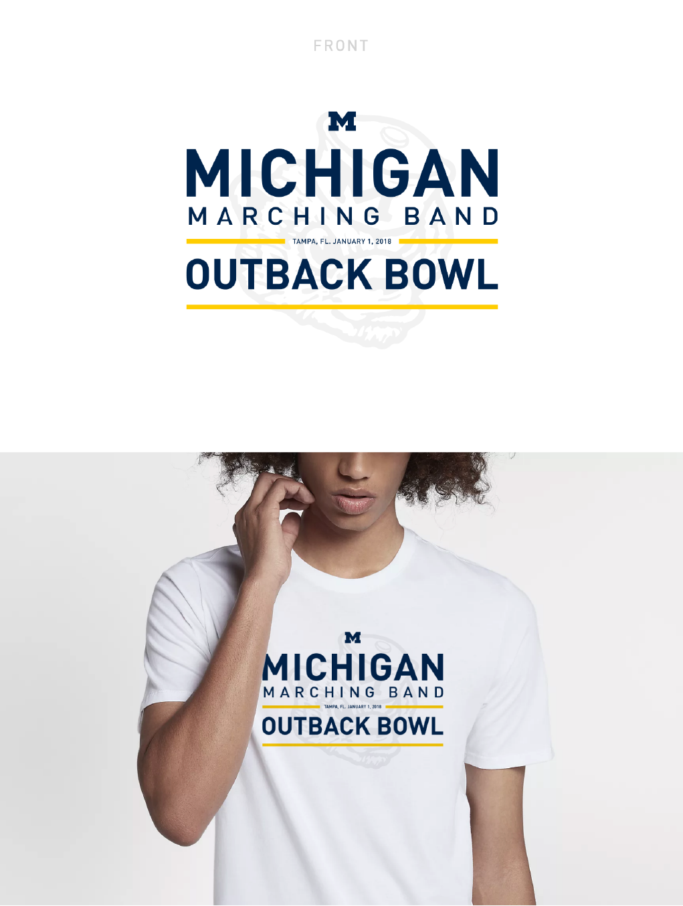
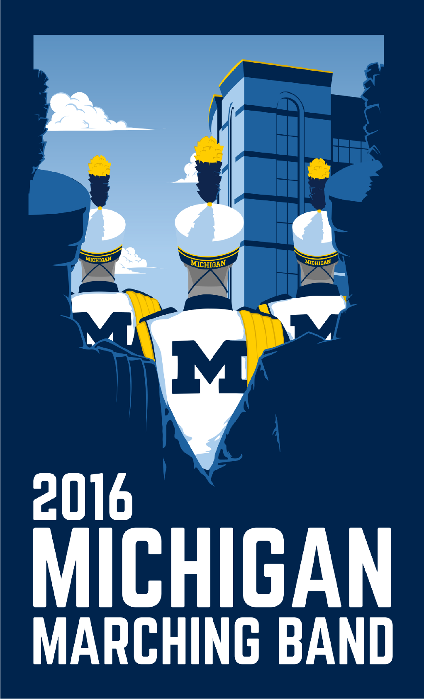
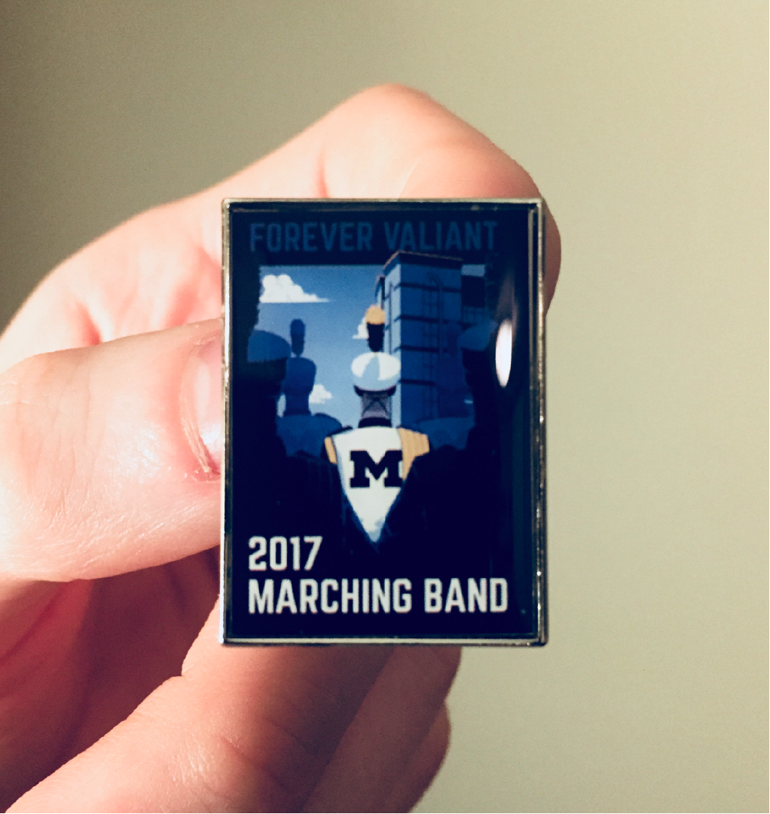
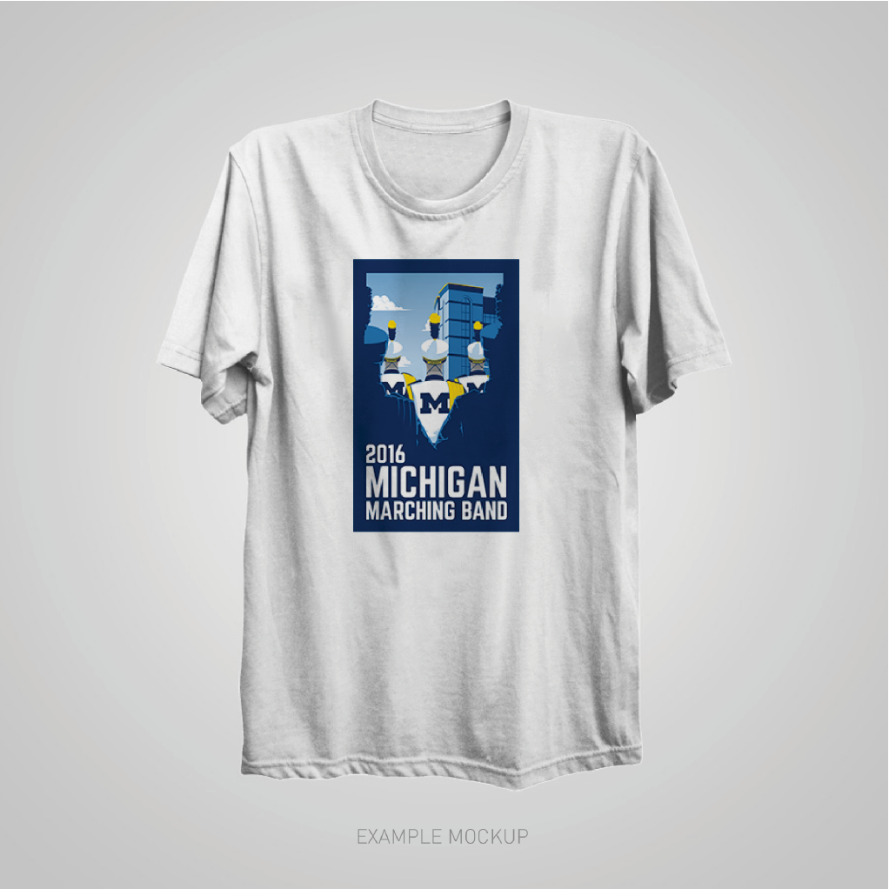
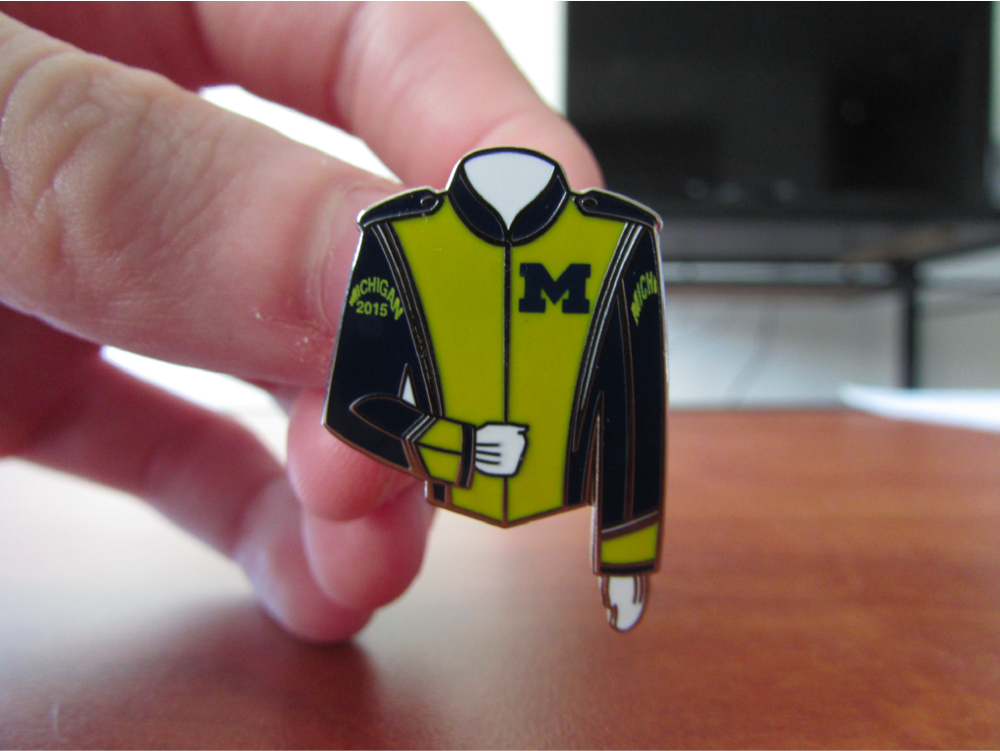

Michigan Marching Band

Project Type: Graphic Design and Marketing
Date: April 2015 - February 2018
Role: Lead Graphic Designer
Work Setting: Individual designer (two person design team in 2017/18 - I was given an apprentice), 5+ marketing administrators.
Summary
When I joined the Michigan Marching Band in 2014, I quickly noticed a problem. The graphic design and visual communication for the band’s marketing efforts were less than stellar. Comic sans was used unironically. I set out to solve this problem.
In early 2015, I applied and was given a position on the Michigan Marching Band’s Marketing and Information Staff. I had realized some trends throughout my first season. People wanted to be respected for the athleticism and intensity that goes into what we practiced day in and day out, and people were tired of being portrayed as the classic “band nerd.”
I did not want to go too overbearing with the “athletic intensity” idea, so I decided to shy away from “intensity” cliches such as fire, smoke, and lightning (this type of stuff had indeed been used in a rather untasteful manner before I took over the design role). Instead I’ve tried to keep a simple, clean style consistent with brand guidelines of the University of Michigan. In order to move away from the “band nerd” look, I chose to always use the most dynamic photography of our band as well as mirror subtle design cues from the University’s athletic department.
What Do I Do?
There are three main categories that my work falls under:
1) Marketing 2) Recruitment 3) Public Relations
Most of my design and video work falls under the umbrella of marketing and recruitment. This encompasses digital (websites and social media) as well as physical (posters, banners, and merchandise) visual communication.
However, some of the more impactful work that I do falls into this public relations category. This entails anything from outreach to university and MMB donors to large presentations in Naples, Florida. The Marketing and Information Staff coordinates, designs, and constructs much of the outward facing efforts to connect with the public and alumni of the program and the university.
Note: I cannot share most of the public relation work due to non-disclosure agreements around certain information.
Work Samples
         Passing the Torch
In the spring of 2017, I was given the task of finding an apprentice that I could coach as the next lead designer after after my graduation from the university. For this, I connected with a freshman trumpet player who was enrolled in the Stamps School of Art and Design.
Throughout 2017 and early 2018, I lead our small design duo. As I graduate in April of 2018, I will pass my role as lead designer and videographer on to this new designer.